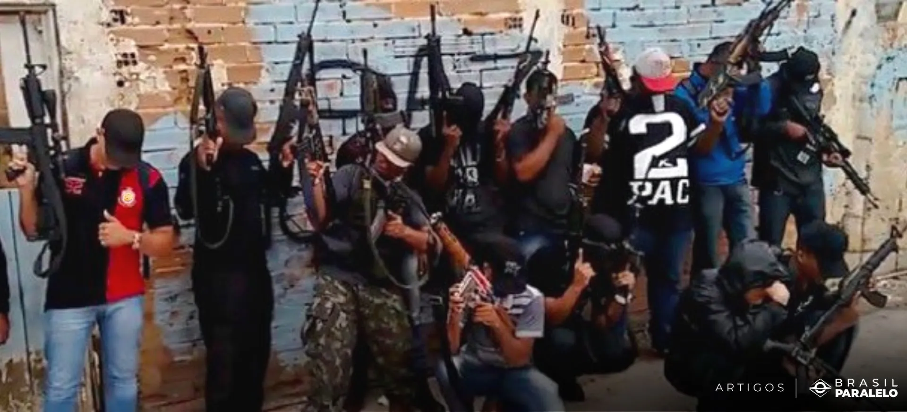
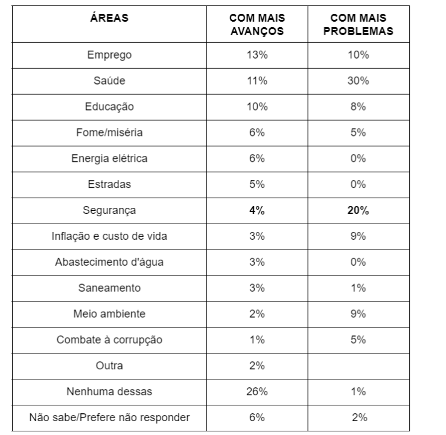
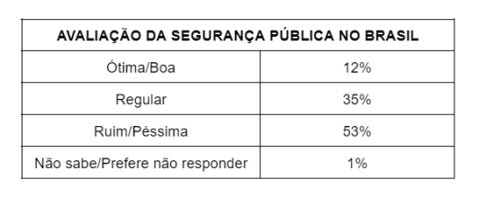

Pesquisa do IREE mostra percepção do brasileiro sobre a Segurança Pública no Brasil
Segurança | 14/02/2026

Pesquisa do IREE, realizada pelo Instituto de Pesquisas Sociais, Políticas e Econômicas (Ipespe) e a BRZ Consultoria investigou a percepção da população brasileira sobre a Segurança Pública no país e o nível de conhecimento, a avaliação e as expectativas sobre a Proposta de Emenda à Constituição (PEC) da Segurança.
A pesquisa “Avaliação da Segurança Pública no Brasil e opinião sobre a PEC da Segurança” ouviu 2.000 brasileiros com 16 anos ou mais em todas as regiões do país. A margem de erro é de 2,2 pontos percentuais para mais ou para menos e intervalo de confiança de 95,45%.
Segundo o levantamento, segurança pública é a segunda área com mais problemas no país, ficando atrás apenas da Saúde. Somente 4% dos entrevistados consideram que segurança pública está melhor atualmente ou identificam a área como a que mais avançou.
A pesquisa também identificou que predomina o desconhecimento sobre a PEC da Segurança, mas entre os que conhecem o assunto, 79% consideram o projeto positivo e acreditam que, caso aprovadas, as mudanças irão melhorar a segurança pública no país.
Confira abaixo os principais destaques da pesquisa.

Metade da população brasileira se sente insegura em sua comunidade, bairro ou localidade. A pior situação é nas periferias, onde 61% das pessoas declararam se sentirem inseguras ou muito inseguras. Nas capitais, o índice é de 58%. No interior, a sensação de insegurança é menor (41%).
Por região, o Sul e o Centro-Oeste apresentam os maiores índices de segurança, com 35% da população se declarando seguras e muito seguras. Por outro lado, o Norte desponta como a região com a maior sensação de insegurança (55%).
Mais da metade da população avalia a Segurança Pública como ruim ou péssima (53%). Os maiores índices de desaprovação estão entre as mulheres (54%), a população com idade entre 60 e 69 anos (57%), pessoas com ensino superior (64%), pessoas com renda acima de 5 salários mínimos (64%) e entre os que desaprovam o governo Lula (64%). Também desaprovam mais a situação da segurança pública no Brasil a população branca (58%), moradores da Região Sudeste (57%) e das capitais (60%).

Principais problemas de Segurança Pública no país
Segundo a pesquisa, para os brasileiros, roubos e furtos são hoje os maiores problemas de segurança pública (41%), seguidos de tráfico de drogas (38%), violência contra a mulher (25%), falta de policiamento (24%) e crime organizado e milícias (22%). Roubos e furtos são a maior preocupação para os moradores das capitais (53%) e das periferias (39%), enquanto para a população do interior, o tráfico de drogas (41%) é o problema que mais aflige.
Quase metade das pessoas conhece casos de violência contra a mulher (48%), e quanto maior a instrução, mais registros (51% entre quem tem ensino superior).